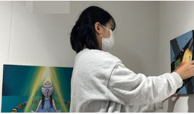
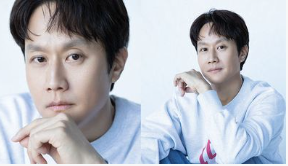

|  |
‘13남매’ 남보라, 작가 된 열째 동생 챙기기… 역시 ‘K-장녀’ |
| 사진에는 남보라의 동생 남소라가 자신의 작품을 직접 갤러리에 설치하고 있는 모습이 담겨있다. 이어 남보라는 "소라 작가님 첫 전시회 파이팅!"이라며 갤러리 앞에 서 있는 동생의 사진도 올렸다. 또 남보라는 "소라 자기 자신에게 물었던 질문들을 그림에 담았어요. 나를 찾은 과정 속에 있는 20대의 솔직한 고민이 담긴 작품입니다"라고 동생의 작품을 소개하며 애정을 드러냈다. |
‘라스’·‘유퀴즈’ 이어 ‘대한 외국인’·’주간 아이돌’ 결방… 연예계 올스톱 5일째 |
|
| 이태원 압사 참사로 인한 국가애도기간이 이어지고 있는 가운데 5일째 예능 프로그램 결방이 이어진다. 2일 OSEN 취재 결과, 이날 방송 예정이던 MBC에브리원 ‘대한외국인’, MBC M ‘주간아이돌’은 결방을 결정했다. 이태원 참사 여파로 인한 결방 결정이다. |
|  |
'제갈길' 종영, 정우 "'응사' '쎄시봉' 이후 또 노래..즐겁게 불렀다" |
| 배우 정우가 tvN ‘멘탈코치 제갈길’의 종영을 맞아 진심 어린 소감을 전해왔다.정우는 ‘응답하라 1994’ 이후 약 9년 만의 tvN 복귀작으로 ‘멘탈코치 제갈길’을 선택해 화제를 모았다. ‘멘탈코치 제갈길’은 멘탈코치가 되어 돌아온 전 국가대표가 선수들을 치유하며, 불의에 맞서 싸우는 멘탈케어 스포츠 활극. 극 중 정우는 영구 |